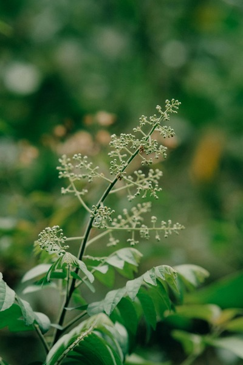
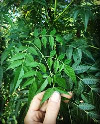
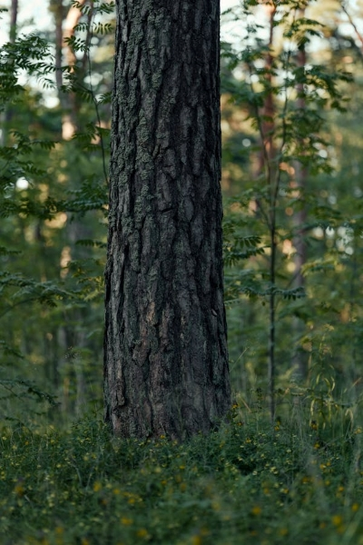

Neem is widely distributed across tropical and subtropical regions, particularly in:
South Asia: India, Pakistan, Bangladesh, Sri Lanka
Southeast Asia: Myanmar, Thailand, Indonesia
Africa: Kenya, Nigeria, Ethiopia, Ghana, Senegal
Other Regions: Caribbean, Central and South America, Australia
It grows best in regions with hot, dry climates and can tolerate drought conditions. Neem is commonly
found in regions with sandy and well-drained soils, particularly in dry, arid areas.



Medicinal Uses
Neem has a wide range of medicinal applications, traditionally used in Ayurveda, Unani, and folk
medicine:
Antibacterial and Antifungal: Neem leaves, bark, and oil are used to treat infections,
skin
diseases (e.g., eczema, psoriasis), and fungal conditions.
Anti-inflammatory: Neem is used to reduce inflammation and treat conditions like
arthritis
and joint pain.
Antimalarial: Neem extracts are traditionally used in the prevention and treatment of
malaria.
Detoxification: Neem is believed to purify the blood and support liver function,
promoting
overall detoxification.
Oral Health: Neem twigs are commonly used as toothbrushes (known as datun) in rural areas
to
improve oral hygiene.
Skin Care: Neem oil is used to treat acne, dandruff, and other skin issues due to its
antiseptic properties.
Methods of Cultivation
Climate and Soil Requirements: Neem thrives in hot, dry conditions. It prefers well-drained
sandy soils but can grow in various types, including clay and loamy soils.
Propagation: Neem is propagated through seeds, which should be sown within 2-3 weeks
after
harvesting to ensure viability. Seeds are usually planted directly in the soil or in nursery
beds.
Planting: Saplings or seeds should be planted in pits (60cm x 60cm x 60cm) during the
monsoon
season. Proper spacing (usually around 5-6 meters apart) should be maintained to allow room for
growth.
Watering: Neem is drought-resistant, but regular watering is essential during the first
1-2
years to establish the saplings.
Pruning: Pruning helps in maintaining tree shape and removing dead or diseased branches.
Pest Control: Neem itself acts as a natural pesticide due to the presence of compounds
like
azadirachtin, so it requires minimal pest control measures.
Harvesting: Leaves, bark, and seeds can be harvested at different stages. Seeds are
collected
for oil extraction, while leaves and bark are harvested for medicinal use.
MultiMedia Content
To know more about method of cultivation click here